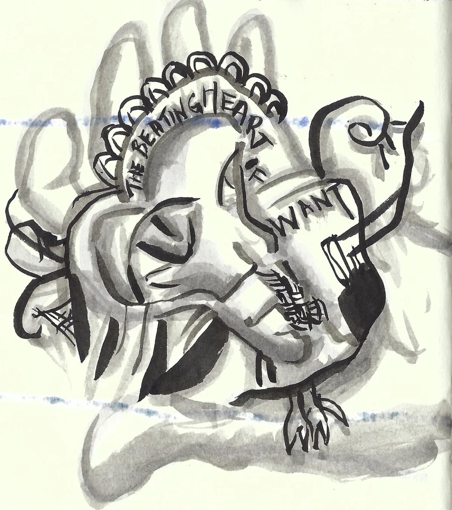

Home
Art
Hello! I am Gwenhwyfar.
These days, I am mostly
making art.

other places you can find me
Twitter:
@maebichka
(I am very active)
Instagram:
@gwenhwyfar.world
(I am somewhat active)
Substack:
Gutstack
(I am not very active)
Soundcloud:
@maebichka
(I am not active)
Email:
(I read it)
other pages
Magic phrases, koans, & meditations
Images I like
blog
2026-09-05
Notes on my grounding practice
2026-08-29
The desire to check Twitter
Created: 2026-08-26
Last updated: 2026-09-14